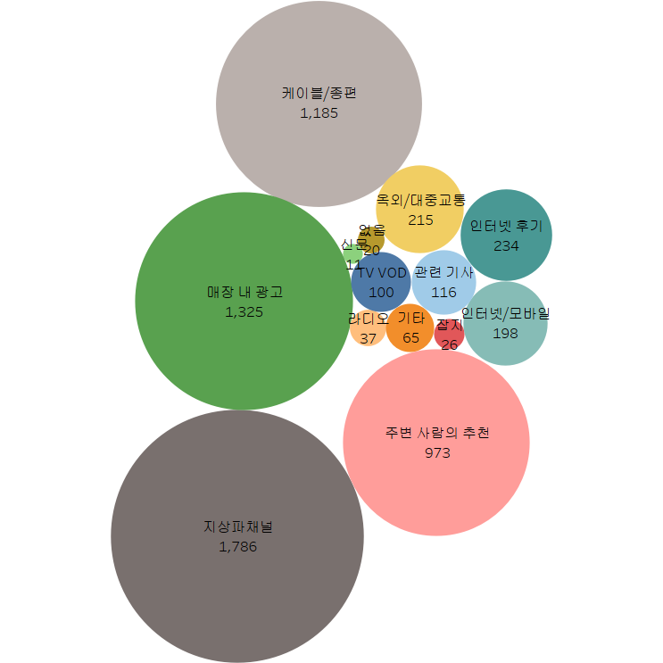
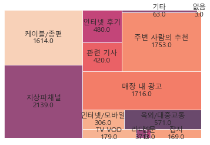

3. Kobaco 소비자행태조사
마지막 데이터는 한국방송광고진흥공사 (Kobaco)에서 조사한 소비자행태조사(MCR) 데이터입니다.
총 4000명에게 상품 구매에 매체가 미치는 영향을 조사하기 위하여 설문조사를 실시했습니다.
한 질문에 대해 복수의 답이 가능해서 여러 칼럼에 답이 흩어져 있는 모양입니다.
분석을 위해 한 칼럼으로 합쳐서 분석하기 위한 함수를 생성했습니다.
3.1. 라이브러리 불러오기
import pandas as pd
import numpy as np
import matplotlib
import matplotlib.pyplot as plt
import seaborn as sns
import matplotlib.font_manager as fm
fm._rebuild()
from collections import Counter
# import squarify# matplotlib.rcParams["font.family"] = "AppleGothic"
matplotlib.rcParams["font.family"] = "Malgun Gothic"
matplotlib.rcParams["font.size"] = 123.2. 데이터 불러오기
path = r"C:\Users\TFG5076XG\Documents\pythoncodes\data\MCR2019_최종.xlsx"df = pd.read_excel(path, sheet_name = 0, engine = "openpyxl")
df.fillna(0, inplace = True)df.shape## (4000, 3619)temp = df.filter(regex = "^A")3.3. EDA
다음과 같은 질문을 기반으로 EDA를 실시했습니다.
장르별 애청자의 구매 제품/서비스의 차이가 있을까?
매체별 제품/서비스의 구매 영향은 어떨까?
# 응답자 정보
for name in temp.columns.tolist():
print(df.loc[:, name].value_counts().sort_index())table = pd.DataFrame(temp["A_002"])ax = sns.countplot(data = table,
x = "A_002").\
set(xticklabels = ["10대", "20대", "30대", "40대", "50대", "60대"])
plt.xlabel("연령대")## Text(0.5, 0, '연령대')plt.ylabel("명")## Text(0, 0.5, '명')plt.title("응답자 연령대 분포")
응답자의 연령대 분포는 40대와 50대가 가장 많았습니다.
# column들을 합치는 함수 combine_cols
def combine_cols(temp_target_df):
ans_Series = pd.Series("", index = range(len(temp_target_df)))
for i in range(len(temp_target_df)):
temp_list = list()
# print("-----")
for j in range(len(temp_target_df.columns)):
# print(c_temp.iloc[i, j])
if temp_target_df.iloc[i, j] == 0:
pass
else:
temp_list.append(temp_target_df.iloc[i, j])
# print(temp_list)
ans_Series.iloc[i] = temp_list
return ans_Series복수 답을 한 칼럼의 리스트 형태로 묶는 함수를 생성했습니다.
# 분석용 테이블을 만드는 create_tb
def create_tb(col):
a_list = list()
temp[col].apply(lambda x: a_list.append(x))
a_list = sum(a_list, [])
a_list_counter = Counter(a_list)
table = pd.DataFrame.from_dict(a_list_counter, orient='index')
table = table.drop(labels ="#NULL!", axis = 0)
table.index = table.index.astype("int64")
table = table.sort_index()
return tablecol_list = ["C_01_001", "C_01_031", "C_01_034", "J_12_01_009", "J_12_04_010", "J_12_04_011"]for col in col_list:
df[col] = combine_cols(df.filter(regex = col))# 예능을 좋아하는 사람들로 필터링
temp = df[df["C_01_001"].apply(lambda x: x.count(7)) == 1]a_list = list()
temp["C_01_034"].apply(lambda x: a_list.append(x))## 0 None
## 1 None
## 2 None
## 3 None
## 4 None
## ...
## 3995 None
## 3996 None
## 3997 None
## 3998 None
## 3999 None
## Name: C_01_034, Length: 3541, dtype: objecta_list = sum(a_list, [])
a_list_counter = Counter(a_list)
table = pd.DataFrame.from_dict(a_list_counter, orient='index')
table = table.drop(labels ="#NULL!", axis = 0)
table.index = table.index.astype("int64")
table = table.sort_index()create_tb("C_01_034")## 0
## 1 74
## 2 188
## 3 117
## 4 162
## 5 185
## 6 31
## 7 121
## 8 16
## 9 188
## 10 307
## 11 3
## 12 247
## 13 20
## 14 191
## 15 47
## 16 2
## 17 26
## 18 13
## 19 6
## 20 27
## 21 142new_index = ["자동차",
"일반의류",
"스포츠의류",
"패션잡화",
"휴대폰",
"개인휴대가전",
"생활가전",
"인테리어",
"외식체인점",
"식음료",
"기업/기관",
"국내외 촬영장소",
"금융",
"화장품",
"제약/의료",
"반려동물 상품",
"유아용품",
"게임",
"기타 앱",
"박람회/축제",
"커피전문점"
]table.index = new_indexchart = sns.barplot(data = table,
x = table.index.values,
y = table.iloc[:,0])
plt.xticks(rotation = 90)## (array([ 0, 1, 2, 3, 4, 5, 6, 7, 8, 9, 10, 11, 12, 13, 14, 15, 16,
## 17, 18, 19, 20]), [Text(0, 0, '자동차'), Text(1, 0, '일반의류'), Text(2, 0, '스포츠의류'), Text(3, 0, '패션잡화'), Text(4, 0, '휴대폰'), Text(5, 0, '개인휴대가전'), Text(6, 0, '생활가전'), Text(7, 0, '인테리어'), Text(8, 0, '외식체인점'), Text(9, 0, '식음료'), Text(10, 0, '기업/기관'), Text(11, 0, '국내외 촬영장소'), Text(12, 0, '금융'), Text(13, 0, '화장품'), Text(14, 0, '제약/의료'), Text(15, 0, '반려동물 상품'), Text(16, 0, '유아용품'), Text(17, 0, '게임'), Text(18, 0, '기타 앱'), Text(19, 0, '박람회/축제'), Text(20, 0, '커피전문점')])for p in chart.patches:
# print(p.get_x())
chart.annotate(int(p.get_height()),
(p.get_x() + p.get_width() / 2., p.get_height()),
ha = "center",
size = 12
)## Text(0.0, 74.0, '74')
## Text(1.0, 188.0, '188')
## Text(2.0, 117.0, '117')
## Text(3.0, 162.0, '162')
## Text(4.0, 185.0, '185')
## Text(5.0, 31.0, '31')
## Text(6.0, 121.0, '121')
## Text(7.0, 16.0, '16')
## Text(8.0, 188.0, '188')
## Text(9.0, 307.0, '307')
## Text(10.0, 3.0, '3')
## Text(11.0, 247.0, '247')
## Text(12.0, 20.0, '20')
## Text(13.0, 191.0, '191')
## Text(14.0, 47.0, '47')
## Text(15.0, 2.0, '2')
## Text(16.0, 26.0, '26')
## Text(17.0, 13.0, '13')
## Text(18.0, 6.0, '6')
## Text(19.0, 27.0, '27')
## Text(20.0, 142.0, '142')plt.title("예능 애청자가 TV에서 접한 후 실제로 구입한 제품/서비스")## Text(0.5, 1.0, '예능 애청자가 TV에서 접한 후 실제로 구입한 제품/서비스')plt.ylabel("구매 수")## Text(0, 0.5, '구매 수')plt.show()
예능 애청자들이 TV에서 접한 후 실제로 구입한 제품에는 식음료가 차지하는 비중이 가장 컸습니다.
그렇다면 이러한 추세는 다른 프로그램 장르 애청자에게도 같게 나타날까요?
# 국내 드라마를 좋아하는 사람들로 필터링
temp = df[df["C_01_001"].apply(lambda x: x.count(4)) == 1]table = create_tb("C_01_034")new_index.remove("기업/기관")table.index = new_indexchart = sns.barplot(data = table,
x = table.index.values,
y = table.iloc[:,0])
plt.xticks(rotation = 90)## (array([ 0, 1, 2, 3, 4, 5, 6, 7, 8, 9, 10, 11, 12, 13, 14, 15, 16,
## 17, 18, 19]), [Text(0, 0, '자동차'), Text(1, 0, '일반의류'), Text(2, 0, '스포츠의류'), Text(3, 0, '패션잡화'), Text(4, 0, '휴대폰'), Text(5, 0, '개인휴대가전'), Text(6, 0, '생활가전'), Text(7, 0, '인테리어'), Text(8, 0, '외식체인점'), Text(9, 0, '식음료'), Text(10, 0, '국내외 촬영장소'), Text(11, 0, '금융'), Text(12, 0, '화장품'), Text(13, 0, '제약/의료'), Text(14, 0, '반려동물 상품'), Text(15, 0, '유아용품'), Text(16, 0, '게임'), Text(17, 0, '기타 앱'), Text(18, 0, '박람회/축제'), Text(19, 0, '커피전문점')])for p in chart.patches:
# print(p.get_x())
chart.annotate(int(p.get_height()),
(p.get_x() + p.get_width() / 2., p.get_height()),
ha = "center",
size = 12
)## Text(0.0, 59.0, '59')
## Text(1.0, 163.0, '163')
## Text(2.0, 90.0, '90')
## Text(3.0, 136.0, '136')
## Text(4.0, 153.0, '153')
## Text(5.0, 25.0, '25')
## Text(6.0, 119.0, '119')
## Text(7.0, 15.0, '15')
## Text(8.0, 162.0, '162')
## Text(9.0, 259.0, '259')
## Text(10.0, 220.0, '220')
## Text(11.0, 14.0, '14')
## Text(12.0, 185.0, '185')
## Text(13.0, 43.0, '43')
## Text(14.0, 2.0, '2')
## Text(15.0, 24.0, '24')
## Text(16.0, 8.0, '8')
## Text(17.0, 5.0, '5')
## Text(18.0, 26.0, '26')
## Text(19.0, 116.0, '116')plt.title("국내 드라마 애청자가 TV에서 접한 후 실제로 구입한 제품/서비스")## Text(0.5, 1.0, '국내 드라마 애청자가 TV에서 접한 후 실제로 구입한 제품/서비스')plt.ylabel("구매 수")## Text(0, 0.5, '구매 수')plt.show()
국내 드라마 애청자가 TV에서 접한 후 구매한 제품/서비스는 예능 애청자들의 추세와 크게 다르지 않습니다.
다른 장르의 애청자들도 분석해보면 다른 모습이 나타날 수도 있지만, 두 장르만을 비교했을 때는 차이가 없었습니다.
table = create_tb("J_12_04_010")temp_table = tablemedia_index = ["지상파채널",
"케이블/종편",
"TV VOD",
"라디오",
"신문",
"잡지",
"인터넷/모바일",
"옥외/대중교통",
"매장 내 광고",
"관련 기사",
"인터넷 후기",
"주변 사람의 추천",
"기타",
"없음"]table.index = media_indexchart = sns.barplot(data = table,
x = table.index.values,
y = table.iloc[:,0])
plt.xticks(rotation = 90)## (array([ 0, 1, 2, 3, 4, 5, 6, 7, 8, 9, 10, 11, 12, 13]), [Text(0, 0, '지상파채널'), Text(1, 0, '케이블/종편'), Text(2, 0, 'TV VOD'), Text(3, 0, '라디오'), Text(4, 0, '신문'), Text(5, 0, '잡지'), Text(6, 0, '인터넷/모바일'), Text(7, 0, '옥외/대중교통'), Text(8, 0, '매장 내 광고'), Text(9, 0, '관련 기사'), Text(10, 0, '인터넷 후기'), Text(11, 0, '주변 사람의 추천'), Text(12, 0, '기타'), Text(13, 0, '없음')])for p in chart.patches:
# print(p.get_x())
chart.annotate(int(p.get_height()),
(p.get_x() + p.get_width() / 2., p.get_height()),
ha = "center",
size = 12
)## Text(0.0, 767.0, '767')
## Text(1.0, 507.0, '507')
## Text(2.0, 81.0, '81')
## Text(3.0, 24.0, '24')
## Text(4.0, 3.0, '3')
## Text(5.0, 20.0, '20')
## Text(6.0, 143.0, '143')
## Text(7.0, 110.0, '110')
## Text(8.0, 706.0, '706')
## Text(9.0, 79.0, '79')
## Text(10.0, 177.0, '177')
## Text(11.0, 516.0, '516')
## Text(12.0, 28.0, '28')
## Text(13.0, 8.0, '8')plt.title("간편식 브랜드 선택시 영향을 미쳤던 정보 채널")## Text(0.5, 1.0, '간편식 브랜드 선택시 영향을 미쳤던 정보 채널')plt.ylabel("구매 수")## Text(0, 0.5, '구매 수')plt.show()

간편식 브랜드 선택시 영향을 미쳤던 정보 채널에는 지상파 채널, 주변 사람의 추천, 매장 내 광고 등이 있었습니다.
table = create_tb("J_12_04_011")table.index = media_indextemp_table = pd.merge(temp_table, table, left_index=True, right_index=True).\
rename(columns = {"0_x":"J_12_04_010", "0_y": "J_12_04_011"})chart = sns.barplot(data = table,
x = table.index.values,
y = table.iloc[:,0])
plt.xticks(rotation = 90)## (array([ 0, 1, 2, 3, 4, 5, 6, 7, 8, 9, 10, 11, 12, 13]), [Text(0, 0, '지상파채널'), Text(1, 0, '케이블/종편'), Text(2, 0, 'TV VOD'), Text(3, 0, '라디오'), Text(4, 0, '신문'), Text(5, 0, '잡지'), Text(6, 0, '인터넷/모바일'), Text(7, 0, '옥외/대중교통'), Text(8, 0, '매장 내 광고'), Text(9, 0, '관련 기사'), Text(10, 0, '인터넷 후기'), Text(11, 0, '주변 사람의 추천'), Text(12, 0, '기타'), Text(13, 0, '없음')])for p in chart.patches:
# print(p.get_x())
chart.annotate(int(p.get_height()),
(p.get_x() + p.get_width() / 2., p.get_height()),
ha = "center",
size = 12
)## Text(0.0, 604.0, '604')
## Text(1.0, 379.0, '379')
## Text(2.0, 44.0, '44')
## Text(3.0, 27.0, '27')
## Text(4.0, 2.0, '2')
## Text(5.0, 11.0, '11')
## Text(6.0, 109.0, '109')
## Text(7.0, 39.0, '39')
## Text(8.0, 546.0, '546')
## Text(9.0, 21.0, '21')
## Text(10.0, 104.0, '104')
## Text(11.0, 290.0, '290')
## Text(12.0, 37.0, '37')
## Text(13.0, 56.0, '56')plt.title("최근 1달간 간편식 브랜드를 접촉한 채널")## Text(0.5, 1.0, '최근 1달간 간편식 브랜드를 접촉한 채널')plt.ylabel("구매 수")## Text(0, 0.5, '구매 수')plt.show()
간편식 브랜드 접촉이 가장 많았던 매체는 지상파채널, 매장 내 광고, 케이블/종편의 순서였습니다.
여전히 기업들이 TV 매체에 돈을 많이 쓰기 때문에 나타나는 현상인 것 같습니다.
temp_table["ratio"] = temp_table["J_12_04_010"] / temp_table["J_12_04_011"]브랜드 접촉 대비 상품 구매에 영향이 컸던 정보 채널을 알아보기 위해서 둘을 나눈 ‘ratio’ 변수를 생성했습니다.
# 영향을 미친 정보 채널 / 브랜드를 접촉한 채널
# 실제 구매 / 광고량
temp_table.sort_values(by = "ratio", ascending = False)## J_12_04_010 J_12_04_011 ratio
## 관련 기사 79 21 3.761905
## 옥외/대중교통 110 39 2.820513
## TV VOD 81 44 1.840909
## 잡지 20 11 1.818182
## 주변 사람의 추천 516 290 1.779310
## 인터넷 후기 177 104 1.701923
## 신문 3 2 1.500000
## 케이블/종편 507 379 1.337731
## 인터넷/모바일 143 109 1.311927
## 매장 내 광고 706 546 1.293040
## 지상파채널 767 604 1.269868
## 라디오 24 27 0.888889
## 기타 28 37 0.756757
## 없음 8 56 0.142857‘ratio’ 변수를 확인했을 때 값이 높은 순서는 ‘관련 기사’, ‘옥외/대중교통’ 등의 순서였습니다.
간편식 브랜드를 홍보할 때 PR이나 BTL 매체를 적극 활용할 명분이 있다는 것을 알 수 있습니다.
아래 그림은 영향을 미친 정보 채널에 ratio를 곱하여 트리맵 시각화 한 것입니다.
squarify.plot(temp_table["J_12_04_010"] * temp_table["ratio"],
label = media_index,
value = round(temp_table["J_12_04_010"] * temp_table["ratio"], 0),
alpha = 0.8)
plt.axis("off")
plt.show()